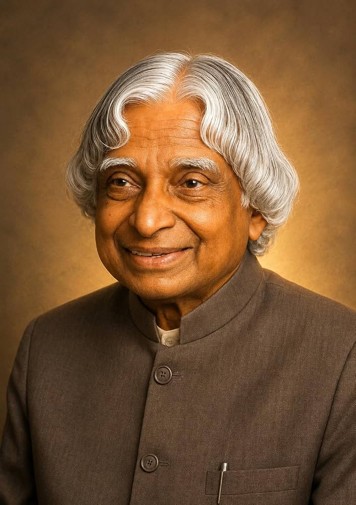

Dr A.P.J Abdul Kalam (1931–2015), widely known as the "Missile Man of India" and
the "People's President," made landmark contributions to India's space program,
defense technology, nuclear capabilities, and public office.
Dr. Kalam is one of the most distinguished scientists of India with the unique honour of receiving
honorary doctorates from 30 universities and institutions.A.P.J. Abdul Kalam, the esteemed
scientist and former president of India, left an enduring legacy through his contributions to space ...
• Bharat Ratna (1997): Awarded India's highest civilian honor.
• Padma Vibhushan (1990) and Padma Bhushan (1981): Honored for his pioneering work in aerospace and defense research.
• Literary Works: Authored influential books including Wings of Fire, Ignited Minds, and India 2020.